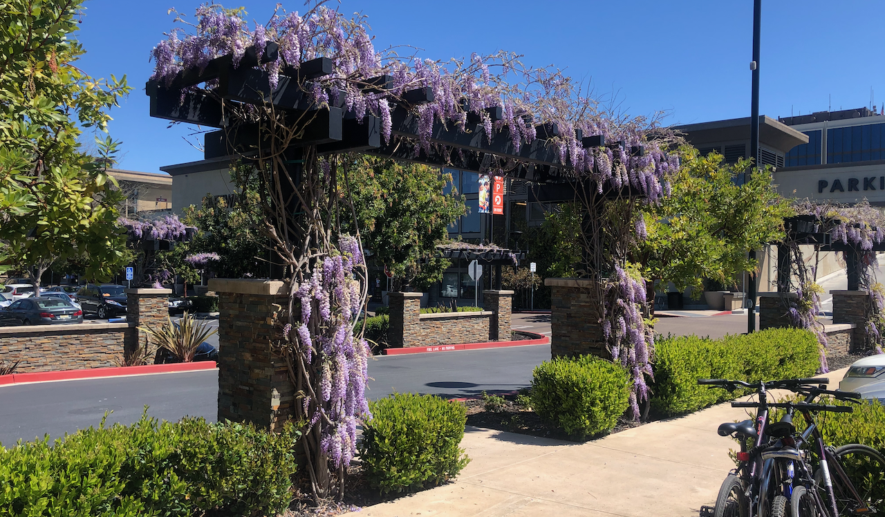

Live → Blog
March 30, 2021

As I sit down to reflect on Q1 of 2021, spring is already here in California. The cold temperatures are slowly disappearing, the days are getting longer, and - my favorite - flowers are in bloom. It is the second day of the final quarter I will enroll at Stanford, but a day before the end of the first actual quarter of the year. As usual, it is the ever present play on beginnings and endings. I am excited to share some reflections on where I am this first quarter with respect to the four pillars I have organized my life around. These pillars are: 1. To develop myself; 2. To build meaningful relationships; 3. To pursue professional excellence; and 4. To cultivate financial sustainability.
I am pleased to report that I continue to successfully lead a healthful life that is sustained by a nutritious diet, an active lifestyle, and sufficient rest. I have made eating well a priority in my life. As I reflect in a recent blog post, eating well to me means eating food that is on average nutritionally balanced, tasty, and shared with good company. Food and meal times continue to be great sources of joy in my life. One of the things I have enjoyed since being in graduate school is an improvement in the quantity of sleep I am able to get. I have been able to get at least seven hours of sleep a night over the past quarter.
For a huge portion of the pandemic, I was struggling to lead an active lifestyle. I no longer biked to and around campus daily nor went on weekly hikes around the Stanford Dish with my dear friend SG. But over the past quarter, even with the bitter California winter, I resumed regular physical activity. To incentivize myself to bike the fourteen kilometer roundtrip to the university, I opted into the twice weekly COVID-19 tests that Stanford offers for their community members. On the 3 other weekdays, I walk around my neighborhood for about half an hour in the morning and then engage in some strength exercises. Starting my days this way has significantly improved my quality of life. With both SG and I about to be fully vaccinated soon, the weekly Stanford Dish hikes are about to return.
At the beginning of Q1, I began the process to wrap up my 5 year therapy journey. I reflected on that journey in this blog post. I feel lucky to have had such a great therapist with whom I could cultivate such a space where I could safely open the hood and work through the various traumas of my life. Through this process, I have been able to learn to forgive myself and others for the ways they have hurt me. I have been able to celebrate the love of those I lost as I navigated unimaginable grief. I have been able to learn to let go and close doors that needed closing. I have developed high standards for how others can treat me and have decided to make my life an example of how things can look like if we nurture our love more than our violence.
A key goal I have under the pillar of Meaningful Communities is to develop and sustain meaningful relationships that are characterized by the mutual commitment to the spiritual growth of one another. Over the past quarter I have thought a lot about the phrases "mutual commitment" and "spiritual growth". In those reflections, which were also tied to grieving the loss of a set of relationships that were lost recently, I realized that I have a tendency to want to hold on to relationships forever. It is great when relationships are able to endure for all of time, like my friendship with GM, but it is important to be comfortable with certain relationships being seasonal. I have spent the past quarter asking the questions: Which of my friendships are seasonal and in which people's lives should my presence be seasonal? This continues to be an active area of growth for me.
Another related goal is to actively do my part in the advancement of the marginalized communities to which I have pledged my allegiance. One such community is students from low-income backgrounds in Botswana. Over the past quarter I have leveraged my position on the United World College National Committee for Botswana to help ensure we are able to resume selecting students from Botswana and nominating them to UWC schools around the world. I am pleased we will be sending some students this year, and a huge part of that is due to the tireless work of my colleague RP. As I look forward to the coming transitions in my life, I realize I am going to have to play lesser of a role on the committee but I am committed to working hard to help set them on a sustainable path. I have big aspirations for UWC in Botswana.
On a more personal level, I have continued to try and offer mentorship to recent BGCSE graduates as they navigate university applications or other post-secondary opportunities. It became clear that it would not be sustainable to single-handedly advice every single student who reached out, especially since most of their concerns are similar. In the interim, I started a limited conversation series on my Facebook page to profile a few Batswana youth who have successfully navigated university applications from Botswana. I hope in the long run someone will fill this gap on a more sustained basis. The series is still ongoing, but so far I have had the honor of interviewing Chilo Ketlhoafetse, Gorata Goitseone Ranama, and Yvette Matshameko. My own journey is also out there, having been interviewed by Avthar for his Learn With Avthar Podcast, Emang for her Creo scholarships consultancy platform, and Mostakim on his podcast The Scholar and The Student. If we add the TEDx talk I gave a few years ago, I think that is enough profiles of me out there for a while.
My job search in this first quarter has continued to bear no fruits. I had forgotten how disheartening the season of waiting can be for an individual. But I am continuing to learn a thing or two. There were moments during Q1 where I was overcome with despair over the situation, but the amazing people who continue to support me have really carried me through. I cannot thank them enough, for their words of encouragement, for their actionable feedback, for reviewing my application materials, for practicing for interviews with me, and especially for listening when I needed a listening ear. Now that the spring recruitment season is picking up and there is some light at the end of the pandemic tunnel, I am optimistic and even more excited to resume the search with new energy. I am confident my talents will find a home soon. Throughout this job search, I have come to realize my general professional aspiration is to help people and organizations make better decisions.
In as far as continuously equipping myself with the skills and experiences needed to excel at the work I do, I was enrolled in MS&E 265: Product Management, MS&E 292: Health Policy Modeling, and MS&E 332: Network Risk & Security. I most enjoyed MS&E 332 because Nick Bambos exposed us to the latest research in the field of risk and security of computer networks. In my usual creative style, for my contribution to the class, I imagined ways to apply the cutting edge research from computer networks to a different domain. I started imagining how we can use those concepts to think about supply chain risk management. I am continuing that work this quarter in EE 384S: Performance Engineering of Computer Systems & Networks.
MS&E 265 was an interesting experience. On the one hand I was blessed with an amazing discussion team but on the other hand my project team left a lot to be desired. The irony of it is the discussion team was randomly assigned and the project team I more or less hand-picked. What are the odds that the team would experience a series of life changing events in their personal lives that would significantly delay the project? I like to believe that this is not a reflection on my ability to pick winning teams. I enjoyed 292 because of my study group, and especially enjoyed learning about health policy modeling. I wrote a final paper assessing factors that limit the clinical adoption of Bayesian Network models.
All in all, Q1 was a success. I look forward to Q2 with even more optimism. In a few weeks I will receive my second dose of the Moderna covid-19 vaccine, I have a few job interviews coming up, and I am excited to take my final set of classes. There is light at the end of the tunnel.
← Return to Blog